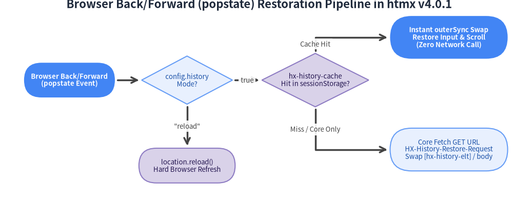
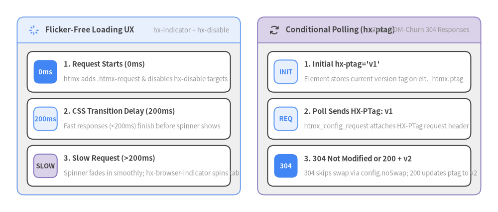

7. 履歴管理・キャッシュ・UX パターン (History, Caching & UX)
htmx v4.0.1 は、プログレッシブエンハンスメント（hx-boost）、クリーンなブラウザ履歴管理（hx-push-url, hx-replace-url, hx-history-elt）、オプトイン型の sessionStorage スナップショットキャッシュ（hx-history-cache）、ちらつきのないローディング表示（hx-indicator, hx-disable）、そして帯域と DOM 更新を節約する条件付きポーリング（hx-ptag）を提供します。

Source Code
from drawlib import canvas
from drawlib.diagrams.flow import Decision, End, FlowDiagram, Process, Start
from drawlib.styles import Styles
canvas.clear()
canvas.setup(width=192, height=82)
flow = FlowDiagram(
node_style=Styles.Neutral.patch(text_size=9.5),
edge_style=Styles.DarkBold,
edge_text_style=Styles.Dark.patch(text_size=9.5),
title="Browser Back/Forward (popstate) Restoration Pipeline in htmx v4.0.1",
)
pop = flow.add(Start("Browser Back/Forward\n(popstate Event)", width=34, height=13, style=Styles.PrimaryFlat.patch(text_size=9.5), text_style=Styles.WhiteBold.patch(text_size=9.5)), xy=(22, 48))
cfg_chk = flow.add(Decision("config.history\nMode?", width=34, height=18, style=Styles.PrimaryNeutral.patch(text_size=9.5)), xy=(66, 48))
reload_end = flow.add(End("location.reload()\nHard Browser Refresh", width=36, height=13, style=Styles.SecondaryNeutral.patch(text_size=9.5)), xy=(66, 16))
ext_chk = flow.add(Decision("hx-history-cache\nHit in sessionStorage?", width=40, height=20, style=Styles.SecondaryNeutral.patch(text_size=9.5)), xy=(114, 48))
cache_hit = flow.add(
End("Instant outerSync Swap\nRestore Input & Scroll\n(Zero Network Call)", width=44, height=16, style=Styles.PrimaryFlat.patch(text_size=9.5), text_style=Styles.WhiteBold.patch(text_size=9.5)),
xy=(164, 64),
)
core_fetch = flow.add(
End("Core Fetch GET URL\nHX-History-Restore-Request\nSwap [hx-history-elt] / body", width=44, height=16, style=Styles.PrimaryNeutral.patch(text_size=9.5)),
xy=(164, 22),
)
pop.connect(cfg_chk, padding=1.0)
cfg_chk.connect(reload_end, label='"reload"', start_side="bottom", end_side="top", padding=1.0)
cfg_chk.connect(ext_chk, label="true", start_side="right", end_side="left", padding=1.0)
ext_chk.connect(cache_hit, label="Cache Hit", start_side="top", end_side="left", padding=1.0)
ext_chk.connect(core_fetch, label="Miss / Core Only", start_side="bottom", end_side="left", padding=1.0)
flow.draw(xy=(4.0, 4.0))
canvas.save()
7.1 hx-boost:inherited="true" によるプログレッシブエンハンスメント
<body> やナビゲーションコンテナに hx-boost:inherited="true" を設定すると、通常の <a href="..."> リンクと <form> 送信が自動的に AJAX リクエストへとアップグレードされ、JavaScript が無効な環境でも標準の画面遷移としてフォールバック動作します。
<!-- Boost all internal links and forms inside the application shell -->
<body hx-boost:inherited="true">
<header>
<nav>
<a href="/projects">Projects</a>
<a href="/billing">Billing</a>
<!-- Opt a specific link out of boosting -->
<a href="/legacy-app" hx-boost="false">Legacy Portal</a>
</nav>
</header>
<main id="app-content" hx-history-elt>
<h1>Welcome</h1>
</main>
</body>
[!IMPORTANT]
hx-boostはほとんどの場合、親コンテナ（<body>,<nav>,<main>）に配置して子孫のリンクやフォームへ適用させるため、htmx v4.0.1 では必ず:inherited修飾子を付けてhx-boost:inherited="true"と記述してください。
7.2 ブラウザ履歴管理 (hx-push-url, hx-replace-url, hx-history-elt)
htmx 2 では履歴遷移のたびに DOM スナップショットを localStorage に保存していたため、容量上限エラーや古い状態の残存バグが課題となっていました。htmx v4.0.1 のコアエンジンでは履歴復元がシンプルかつステートレスに刷新されており、ユーザーが「戻る / 進む」を押すと HX-History-Restore-Request: true と HX-Request-Type: full を伴う GET リクエストを発行して最新状態を復元します。
| 属性・設定オプション | 指定可能な値 | htmx v4.0.1 における動作仕様 |
|---|---|---|
hx-push-url |
"true", "false", またはカスタム URL |
スワップ完了後に history.pushState() でブラウザ履歴へ URL を追加する。 |
hx-replace-url |
"true", "false", またはカスタム URL |
新しい履歴エントリを作らず、history.replaceState() で現在の URL を置換する。 |
hx-history-elt |
コンテナ要素への属性指定 | 履歴復元時に document.body 全体ではなく、この属性を持つ要素（例: <main hx-history-elt>）をスワップ対象にする。 |
htmx.config.history |
true (初期値), false, "reload" |
true: 戻る/進む時に AJAX 再取得、false: 履歴管理無効、"reload": 戻る/進む時に location.reload() を実行。 |
7.3 hx-history-cache による sessionStorage スナップショット即時復元
戻る/進む操作時にネットワーク通信を一切行わず、入力途中の <input> 値やスクロール位置まで含めて即座に画面を復元したい場合は、公式拡張 hx-history-cache.js（登録名: 'history-cache'）を読み込みます。
htmx 2 の旧 localStorage キャッシュと比較して、htmx v4.0.1 の hx-history-cache には以下の利点があります。
- タブ単位で隔離された
sessionStorageを使用し、履歴エントリごとの一意なhistory.state.htmxIdで管理します。 - フォームの入力状態（
input,textarea,select※passwordとfileはセキュリティのため除外）とスクロール位置（scrollTop,scrollLeft）をアノテーション記録・復元します。 - デフォルトで
outerSyncスワップを使用し、ルート要素の参照を維持したまま高速に復元します。 <div hx-history="false">を含むページは自動的にキャッシュ保存をスキップします。
<script src="/dist/htmx.min.js"></script>
<script src="/dist/ext/hx-history-cache.min.js"></script>
<script>
// Optional customization (if using htmax.js, set disable: false to activate)
htmx.config.historyCache = {
size: 15, // Max LRU snapshots in sessionStorage (default: 10)
refreshOnMiss: false, // If true, runs location.reload() on cache miss
disable: false, // Set to false when enabling inside htmax.js
swapStyle: 'outerSync' // Default swap style on cache hit
};
</script>
7.4 ちらつきのないローディング表示と要素の無効化 (hx-indicator & hx-disable)
高速に完了する通信（150ms 未満）ではスピナーを一瞬だけ点滅させず、時間がかかる通信でのみスムーズにインジケーターを表示し、同時にボタンの二重押しを防ぐのが優れた UX の基本です。

Source Code
from drawlib.canvas import save, setup
from drawlib.icons import phosphor
from drawlib.smartarts import CardList, Panel
from drawlib.styles import Styles
setup(width=174, height=74)
# Left Panel: Flicker-Free Indicator & hx-disable
left_panel = Panel(
"Flicker-Free Loading UX",
"hx-indicator + hx-disable",
style=Styles.Neutral,
header_style=Styles.PrimaryNeutral.patch(shape_line_width=1.2),
text_style=Styles.DarkBold.patch(text_size=11.0),
description_style=Styles.Muted.patch(text_size=9.5),
icon=phosphor.spinner_gap,
icon_style=Styles.PrimaryBold,
header_variant="filled",
header_height=9.0,
)
left_panel.draw((6.0, 6.0), width=78.0, height=62.0, align="bottom_left")
l_xy, l_w, l_h = left_panel.get_content_box((6.0, 6.0), width=78.0, height=62.0, padding=(3.5, 3.0))
ux_cards = CardList(
style=Styles.White,
text_style=Styles.DarkBold.patch(text_size=10.5),
description_style=Styles.Muted.patch(text_size=9.5),
badge_style=Styles.PrimaryFlat,
badge_text_style=Styles.WhiteBold.patch(text_size=9.5),
spacing=2.2,
)
ux_cards.add("1. Request Starts (0ms)", "htmx adds .htmx-request & disables hx-disable targets", badge_text="0ms")
ux_cards.add(
"2. CSS Transition Delay (200ms)",
"Fast responses (<200ms) finish before spinner shows",
badge_text="200ms",
badge_style=Styles.PrimaryNeutral,
badge_text_style=Styles.PrimaryBold.patch(text_size=9.5),
)
ux_cards.add(
"3. Slow Request (>200ms)",
"Spinner fades in smoothly; hx-browser-indicator spins tab",
badge_text="SLOW",
badge_style=Styles.SecondaryNeutral,
badge_text_style=Styles.DarkBold.patch(text_size=9.5),
)
ux_cards.draw(l_xy, width=l_w, height=l_h)
# Right Panel: Conditional Polling with hx-ptag
right_panel = Panel(
"Conditional Polling (hx-ptag)",
"Zero-DOM-Churn 304 Responses",
style=Styles.Neutral,
header_style=Styles.SecondaryNeutral.patch(shape_line_width=1.2),
text_style=Styles.DarkBold.patch(text_size=11.0),
description_style=Styles.Muted.patch(text_size=9.5),
icon=phosphor.arrows_clockwise,
icon_style=Styles.DarkBold,
header_variant="filled",
header_height=9.0,
)
right_panel.draw((90.0, 6.0), width=78.0, height=62.0, align="bottom_left")
r_xy, r_w, r_h = right_panel.get_content_box((90.0, 6.0), width=78.0, height=62.0, padding=(3.5, 3.0))
ptag_cards = CardList(
style=Styles.White,
text_style=Styles.DarkBold.patch(text_size=10.5),
description_style=Styles.Muted.patch(text_size=9.5),
badge_style=Styles.PrimaryNeutral,
badge_text_style=Styles.PrimaryBold.patch(text_size=9.5),
spacing=2.2,
)
ptag_cards.add("1. Initial hx-ptag='v1'", "Element stores current version tag on elt._htmx.ptag", badge_text="INIT")
ptag_cards.add("2. Poll Sends HX-PTag: v1", "htmx_config_request attaches HX-PTag request header", badge_text="REQ")
ptag_cards.add(
"3. 304 Not Modified or 200 + v2",
"304 skips swap via config.noSwap; 200 updates ptag to v2",
badge_text="304",
badge_style=Styles.PrimaryFlat,
badge_text_style=Styles.WhiteBold.patch(text_size=9.5),
)
ptag_cards.draw(r_xy, width=r_w, height=r_h)
save()
hx-indicator・transition-delay・hx-disable の組み合わせ実装
/* Delay spinner visibility by 200ms so fast responses never flash a loading icon */
.htmx-indicator {
opacity: 0;
transition: opacity 150ms ease-in;
}
.htmx-request .htmx-indicator,
.htmx-request.htmx-indicator {
opacity: 1;
transition: opacity 200ms ease-in 200ms;
}
<form hx-post="/orders/submit"
hx-indicator="#submit-spinner"
hx-disable="find button, find input">
<input type="text" name="coupon_code" placeholder="Promo code">
<button type="submit">
Place Order
<span id="submit-spinner" class="htmx-indicator">Processing...</span>
</button>
</form>
7.5 hx-ptag (HX-PTag) による条件付きポーリング
短い周期のポーリング（hx-trigger="every 3s"）で毎回同じ HTML を再描画・スワップすると、ネットワーク帯域もブラウザ CPU も無駄に消費します。公式拡張 hx-ptag.js（登録名: 'ptag'）を使うと、要素単位のエンティティタグ（HX-PTag）で差分ポーリングを行えます。
- 要素に初期値
hx-ptag="<initial-hash>"を設定します（または初回レスポンスのHX-PTagヘッダーで初期化）。 - 次回のポーリングリクエストから、自動的に
HX-PTag: <current-value>リクエストヘッダーが送信されます。 - データに変化がない場合、サーバーは空ボディの
HTTP 304 Not Modifiedを返します（304はhtmx.config.noSwapに含まれるためスワップが自動スキップされます）。データが更新された場合のみ、HTTP 200 OKと新しいHX-PTag: <new-hash>ヘッダーを返します。
<script src="/dist/ext/hx-ptag.min.js"></script>
<div id="live-scoreboard"
hx-get="/scores/live"
hx-trigger="every 3s"
hx-ptag="score-rev-41"
hx-swap="innerMorph">
Team A: 2 — Team B: 1
</div>